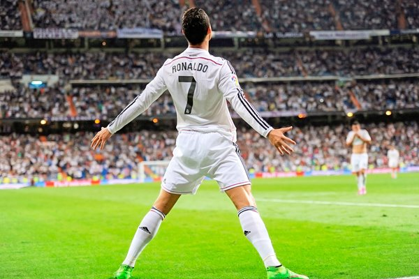
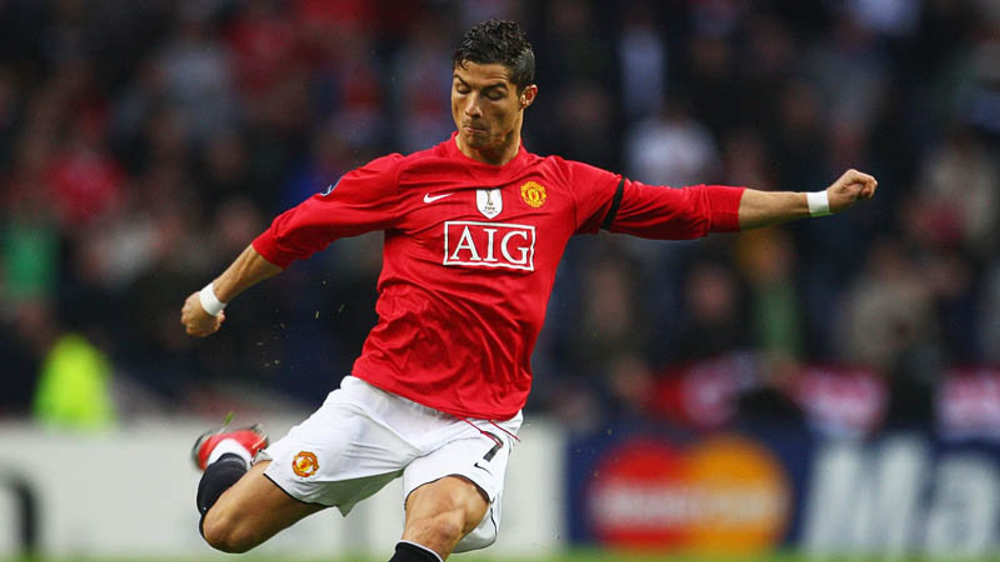
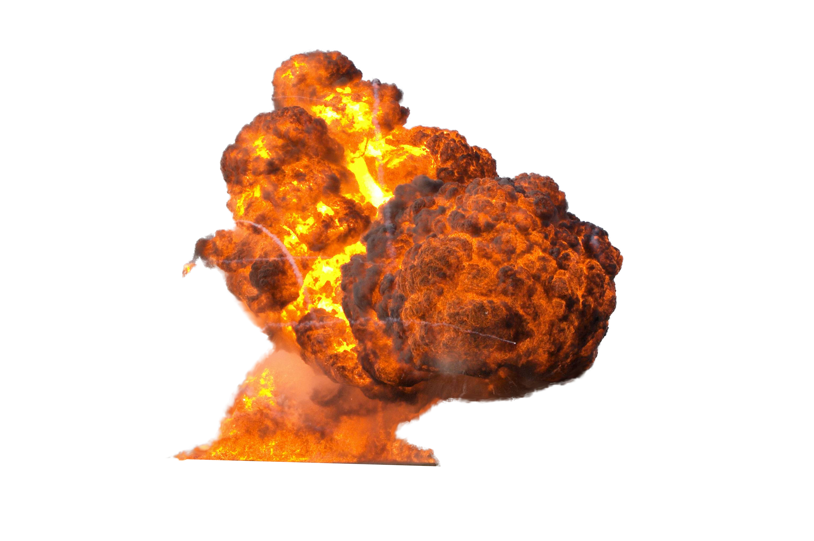

Cristiano Ronaldo urodzil sie 5 lutego 1985 roku na Madeirze
Z zawodu jest pilkarzem i gral w takich klubach jak: Sporting Lizbona (2001-2003),
Manchester United(2003-2009), Real Madryt (2009-2018), Juventus Turyn(2018-2021),
ponownie Manchester United (2021-2022), i obecnie Al Nassr (2022-), i wystapil juz ponad 120
razy w reprezentacji Portugalii
Najskuteczniejszy zawodnik w historii reprezentacji Portugalii: 118 goli
Najskuteczniejszy zawodnik w historii reprezentacji narodowych: 118 goli
Najskuteczniejszy zawodnik w historii seniorskiej pilki noznej: 827 goli
Najskuteczniejszy zawodnik w historii Realu Madryt: 450 goli
Najskuteczniejszy zawodnik w historii Ligi Mistrzow UEFA: 140 goli
Messi tez jest dobry ale jest nie jest porownywalny do pana z Portugalii
Messi jest bez formy nie patrzac na Mistrzostwa Swiata, ktore powinien wygrac francuski zolw Mekambe
Gdyby nie cienki bramkarz puchar bylby znowu w Paryzu
Przypomne tez Messi nie strzelil gola przeciwko Polsce na Mistrzostwach a Wojtek obronil karnego